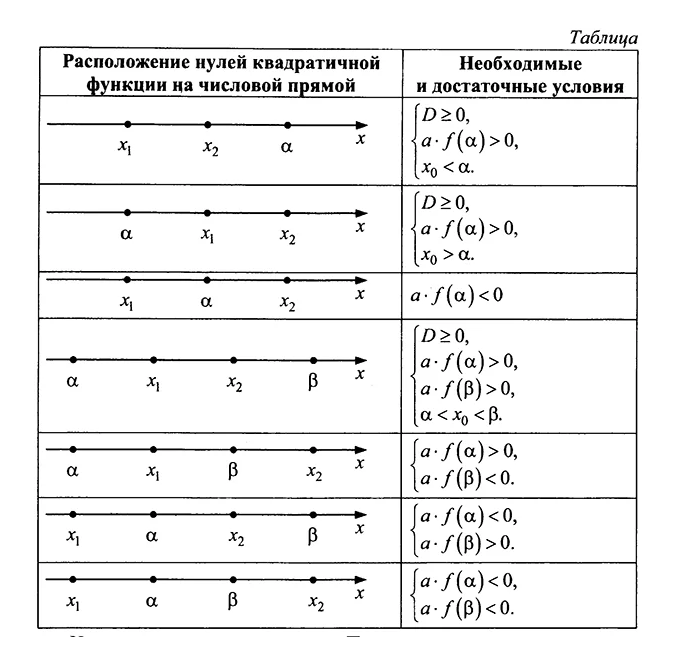

Квадратное уравнение – уравнение вида 

Числа 
Квадратное уравнение может иметь два действительных корня, один действительный корень или ни одного.
Количество корней квадратного уравнения зависит от знака выражения, которое называется дискриминант.
Дискриминант квадратного уравнения: 
Если D > 0, квадратное уравнение имеет два корня: 


Если D < 0, квадратное уравнение не имеет действительных корней.
Чтобы решать квадратные
уравнения,
надо уметь:
Правильно определять коэффициенты квадратного уравнения.
Находить дискриминант и определять количество корней.
Находить корни уравнения по формуле.

Определим коэффициенты в следующих квадратных уравнениях.
1)
Коэффициентом является числа:
2) 
В этом уравнении коэффициенты – это числа:


Пример решения квадратного уравнения 
Решение
Дискриминант уравнения равен: ^{2}-4\cdot 2\cdot \left ( -20 \right )=9+160=169")
Уравнение имеет два корня.
Корни уравнения:


Полезная теорема для решения квадратных уравнений – теорема Виета.
Если 


Теорему Виета удобно использовать, когда коэффициент при 
Например 


Как мы уже знаем, есть три вида неполных квадратных уравнений:
, ему отвечают коэффициенты
и
;
,
;
ax² + bx = 0, при c = 0.
Давайте рассмотрим по шагам, как решать неполные квадратные уравнения по видам.
Как решить уравнение ax² = 0?
Начнем с решения неполных квадратных уравнений, в которых b и c равны нулю, то есть, с уравнений вида ax² =
0.
Уравнение ax² = 0 равносильно x² = 0.
Такое преобразование возможно, когда мы разделили обе части на
некое
число a,
которое не равно нулю. Корнем уравнения x² = 0 является нуль, так как 0² = 0.
Других корней
у этого
уравнения нет, что подтверждают свойства степеней.
Таким образом, неполное квадратное уравнение ax²²= 0 имеет единственный корень x = 0.
Пример 1. Решить −6x² = 0.
Как решаем:
Замечаем, что данному уравнению равносильно x² = 0, значит исходное уравнение имеет единственный корень —
нуль.
По шагам решение выглядит так:
−6x² = 0
x² = 0
x = √0
x = 0
Ответ: 0.
Как решить уравнение ax² + с = 0
Обратим внимание на неполные квадратные уравнения вида ax² + c = 0, в которых b = 0, c ≠ 0.
Мы давно
знаем,
что слагаемые в уравнениях носят двусторонние куртки: когда мы переносим их из одной части уравнения в
другую, они надевает куртку на другую сторону — меняют знак на противоположный.
Еще мы знаем, что если обе части уравнения поделить на одно и то же число (кроме нуля) — у нас получится
равносильное уравнение. Ну есть одно и то же, только с другими цифрами.
Держим все это в голове и колдуем над неполным квадратным уравнением (производим «равносильные
преобразования»):
ax² + c = 0:
перенесем c в правую часть: ax² = - c,
разделим обе части на a: x² = - c/а.
Ну все, теперь мы готовы к выводам о корнях неполного квадратного уравнения.
В зависимости от значений
a и
c, выражение — c/а может быть отрицательным или положительным. br Разберем конкретные случаи.
Если — c/а < 0, то уравнение x²= - c/а не имеет корней. Все потому, что квадрат любого числа всегда равен
неотрицательному числу.
Из этого следует, что при — c/а < 0 ни для какого числа p равенство р² = - c/а
не
является верным.
Если — c/а > 0, то корни уравнения x² = - c/а будут другими.
Например, можно использовать правило
квадратного корня и тогда корень уравнения равен числу √- c/а,
так как (√- c/а)² = - c/а. Кроме того,
корнем
уравнения может стать -√- c/а,
так как (-√- c/а)² = - c/а.
Ура, больше у этого уравнения нет корней.

Проведем анализ уравнения. Для этого рассмотрим квадратный трехчлен:
Пусть x1 и x2 корни нашего уравнения, другими словами, они являются нулями функциями f(x).
И пусть x1
<= x2. Знания, которые могут потребоваться:
Уметь находить абсциссу вершины параболы
А также знать как выглядит график в зависимости от D